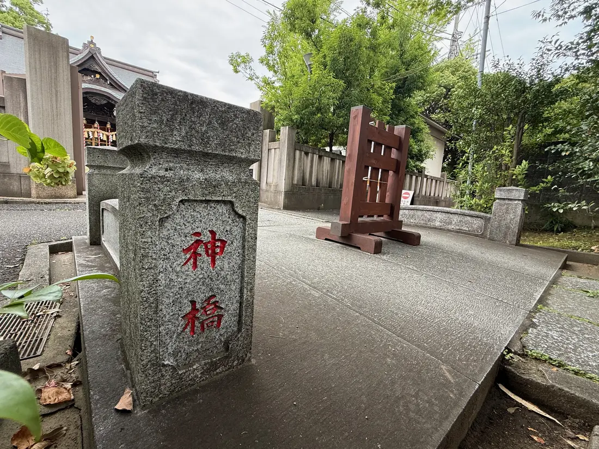
K-03しんきょう
神橋
参道の入口に据えられた石の橋。ここを渡って境内へ進みます。
地図の番号を選ぶと、その場所の実際の写真とご案内を表示します。順路ボタンで、参拝の流れもご確認いただけます。

K-03しんきょう
参道の入口に据えられた石の橋。ここを渡って境内へ進みます。
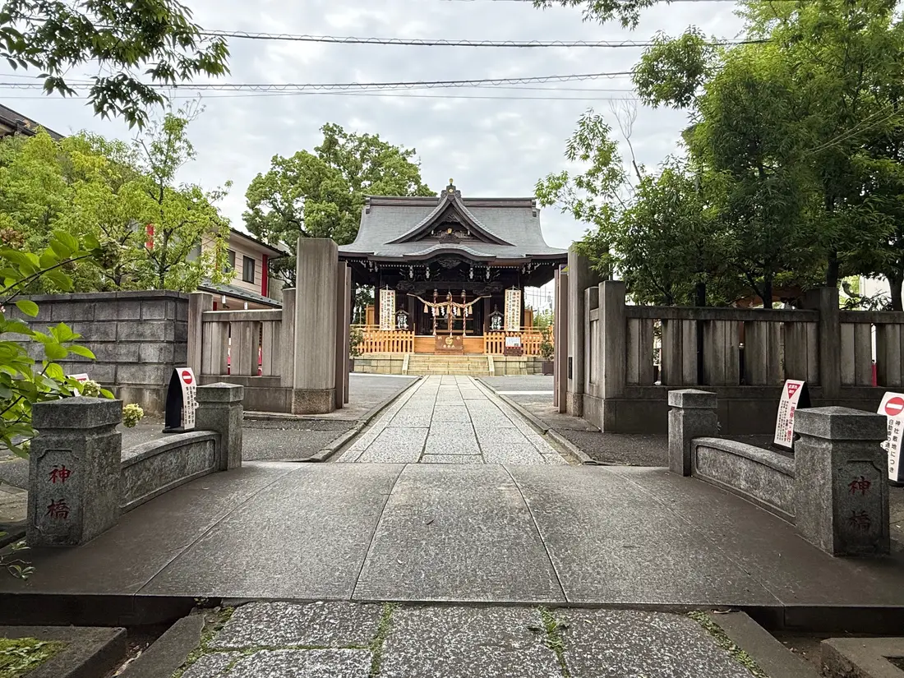
K-04さんどう
神橋から拝殿へ、まっすぐに延びる道。正面に拝殿が見えます。
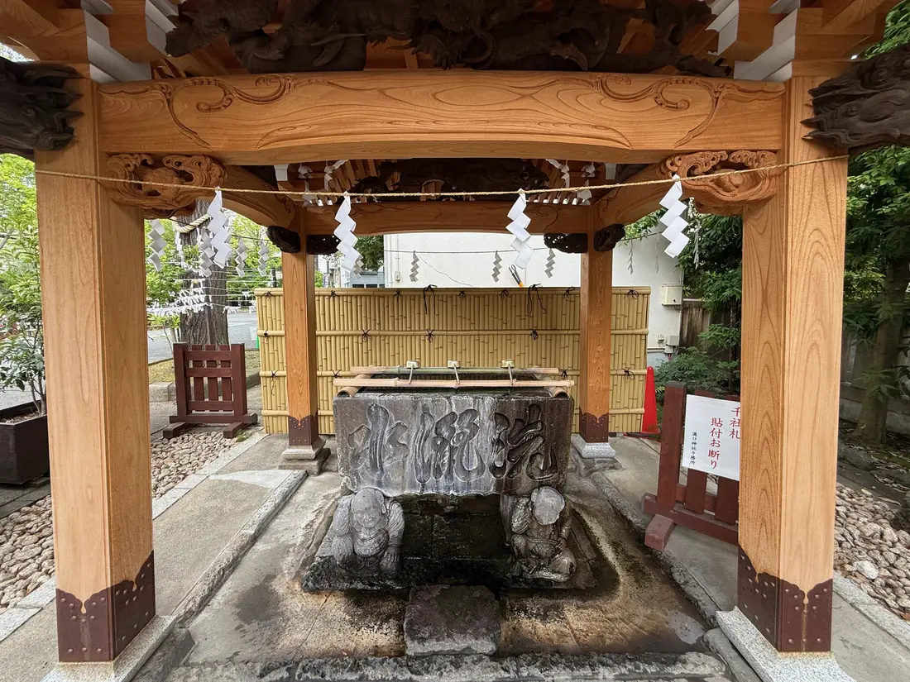
K-05てみずや
参拝の前に、手と口を清める場所です。参道の東側にあります。
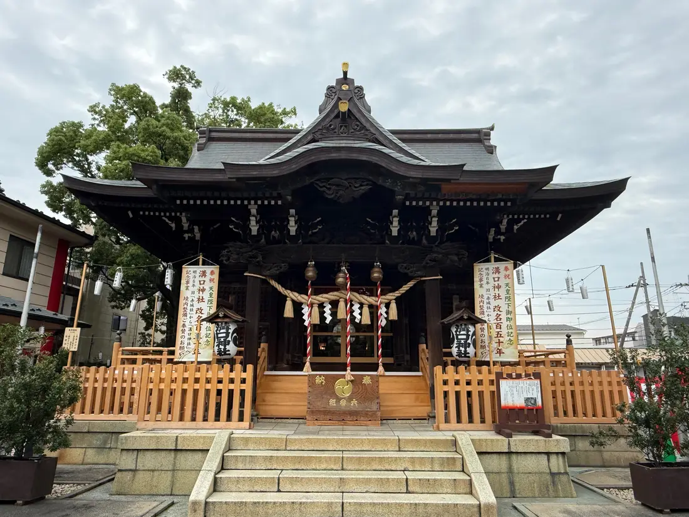
K-06はいでん
参道の正面に建つ、祈りの中心となる建物です。
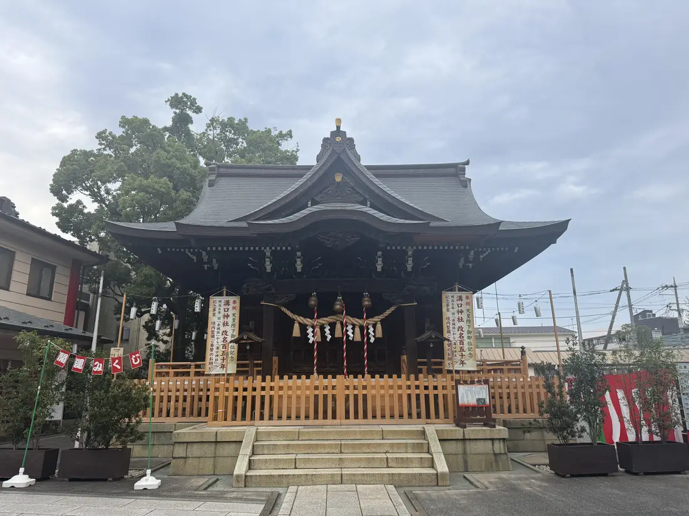
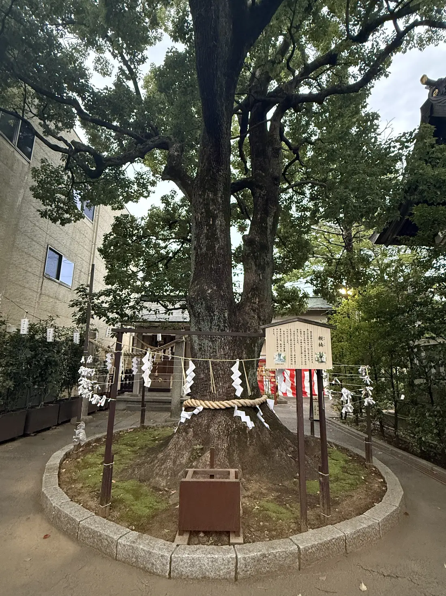
K-07ごしんぼく
境内の御神木として大切に守られている木です。
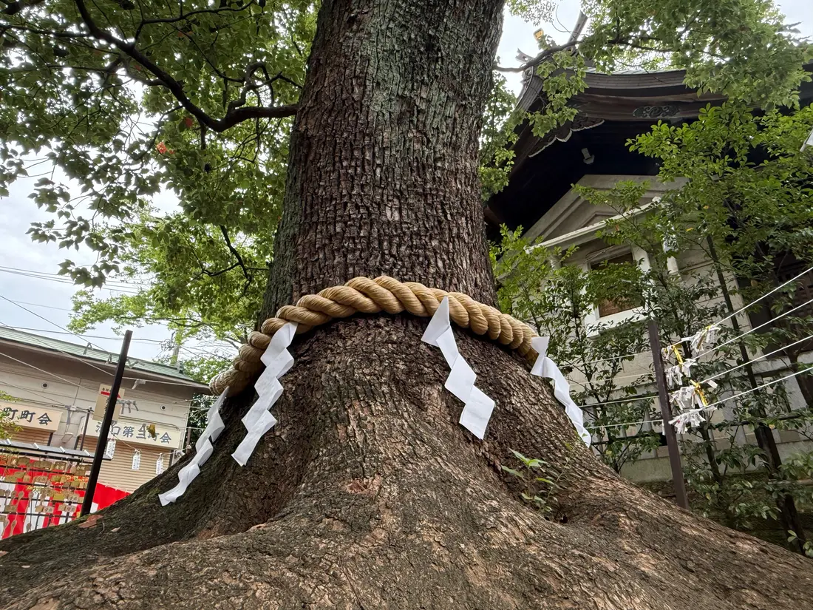
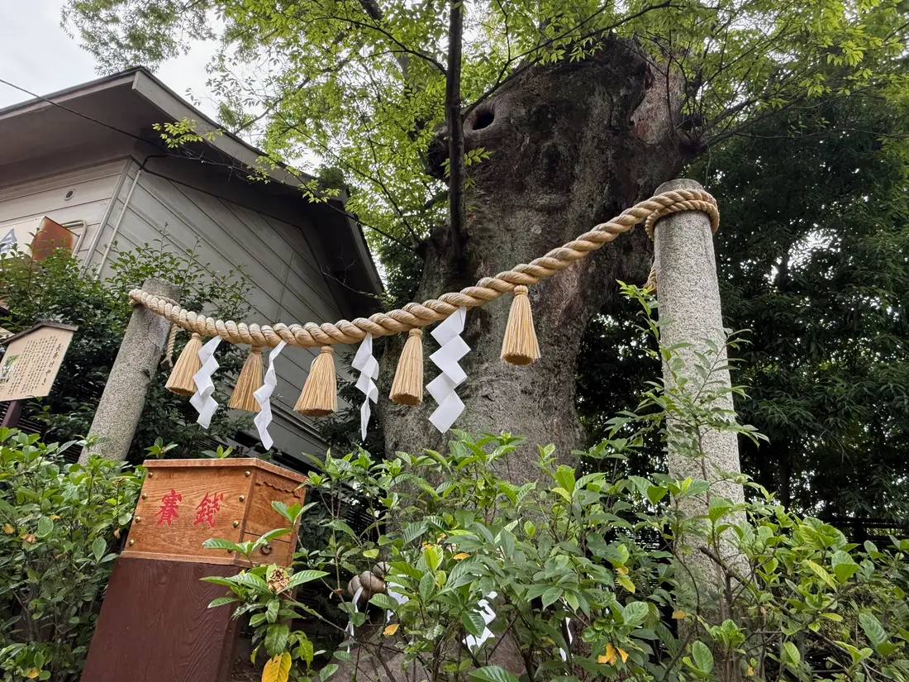
K-08たらちねのいちょう
お食い初めの歯固め石をご奉納いただく場所です。
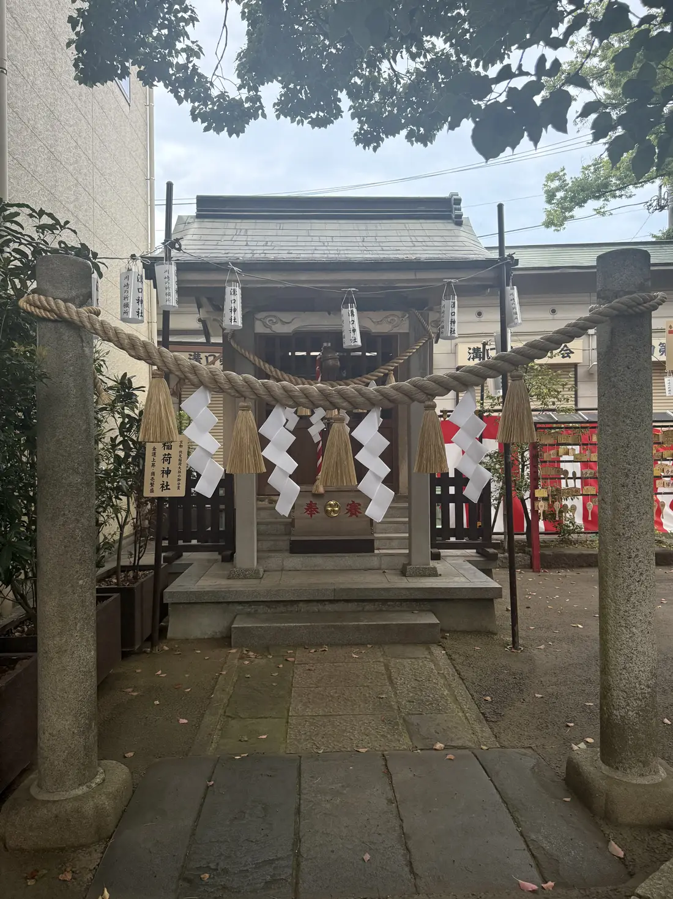
K-09いなりしゃ
境内に鎮座する社です。
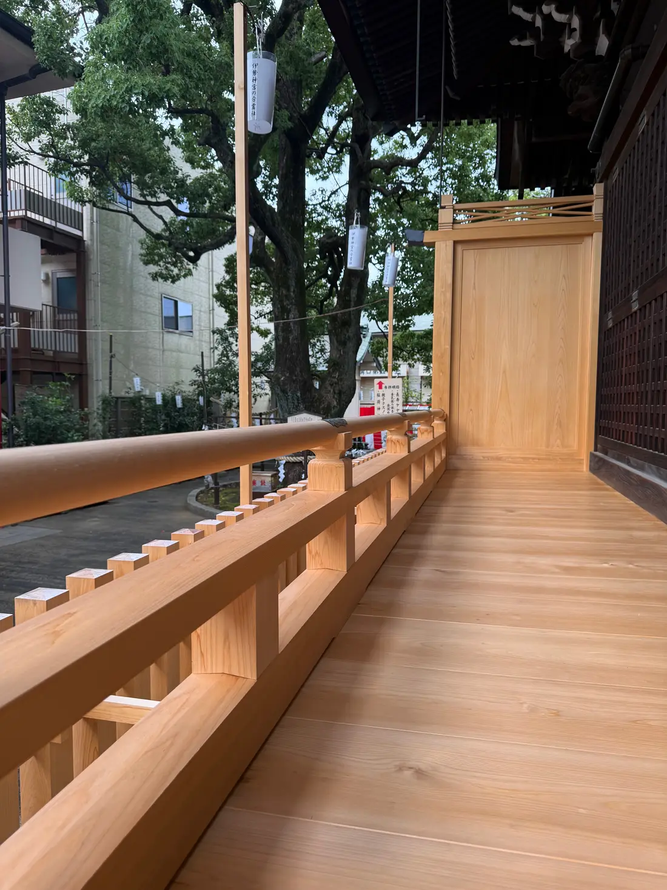
K-10はまえん
改名150年記念事業で改修された、社殿をめぐる回廊です。
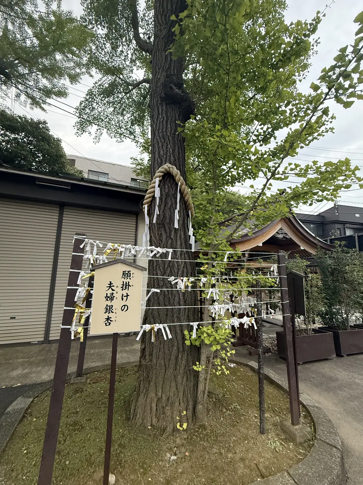
K-24めおといちょう
願掛けの銀杏として親しまれています。
通常参拝の順路
御祈祷受付への順路
※大鳥居・駐車場からの経路、ベビーカー・車椅子の経路は、現地確認ののち追加いたします。順路は神社確認前の案内であり、係員の案内がある場合はそちらに従ってください。